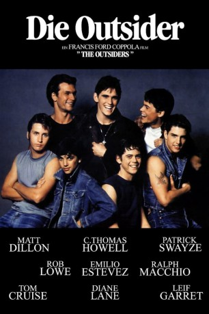

#9860 Outsider: Rebellen ohne Grund
Alternativ: The Outsiders
 
 IMDB-Wertung: 7.2 / 10
IMDB-Wertung: 7.2 / 10  Metascore: 41
Metascore: 41 
Die jugendlichen Gangs im US-Amerikanischen Tulsa der 60er Jahre sind Die Outsider. Ponyboy, seine beiden älteren Brüder Soda und Darry sowie ihre Freunde sind die Greasers, eine schmuddelige und rauhbeinige Gang von Unterschichts-Kids. Ihre stärkste Konkurrenz auf den Straßen sind die Socs – kurz für Socials, die aus besseren Verhältnissen stammen. Die jugendlichen Rivalen geraten immer wieder aneinander, wobei die Socs auch nicht vor dem Einsatz von Rasiermessern zurückschrecken. Als zwei der Greasers ein Auge auf Cherry und Marcia, zwei der Freundinnen von Socs-mitgliedern, werfen eskaliert die Situation.
Jahr: 1983
Dauer: 114 Minuten
FSK: 12
Land: USA Studio: Warner Bros.Tonspuren:
Untertitel: Deutsch,
Auflösung: 1080p (1920x800) Größe: 7690 MB
Genre: Drama, Krimi
Regisseur:  Francis Ford Coppola
Francis Ford Coppola
Drehbuch: Kathleen Rowell, S.E. Hinton
Soundtrack: Carmine Coppola
Darsteller:
 C. Thomas Howell als Ponyboy Curtis
C. Thomas Howell als Ponyboy Curtis Matt Dillon als Dallas Winston
Matt Dillon als Dallas Winston Ralph Macchio als Johnny Cade
Ralph Macchio als Johnny Cade Patrick Swayze als Darrel Curtis
Patrick Swayze als Darrel Curtis Rob Lowe als Sodapop Curtis
Rob Lowe als Sodapop Curtis Emilio Estevez als Two-Bit Matthews
Emilio Estevez als Two-Bit Matthews Tom Cruise als Steve Randle
Tom Cruise als Steve Randle Glenn Withrow als Tim Shepard
Glenn Withrow als Tim Shepard Diane Lane als Cherry Valance
Diane Lane als Cherry Valance- Leif Garrett als Bob Sheldon
- Darren Dalton als Randy Anderson
- Michelle Meyrink als Marcia
 Tom Waits als Buck Merrill
Tom Waits als Buck Merrill Gailard Sartain als Jerry
Gailard Sartain als Jerry William Smith als Store Clerk
William Smith als Store Clerk Tom Hillmann als Greaser in Concession Stand
Tom Hillmann als Greaser in Concession Stand Sofia Coppola als Little Girl
Sofia Coppola als Little Girl- Teresa Wilkerson Hunt als Woman at Fire
- Linda Nystedt als Nurse
- S.E. Hinton als Nurse
 John Meier als Paul
John Meier als Paul- Ed Jackson als Motorcycle Cop
- Daniel R. Suhart als Orderly
- Heather Langenkamp als (scenes deleted)
- Trey Callaway als Soc in Concession Stand (uncredited)
- Ronald Colby als College Professor (uncredited)
- Emeline Denito als Mrs. Cade (uncredited)
 Flea als Soc #3 (uncredited)
Flea als Soc #3 (uncredited)- Cam Neely als Soc #2 (uncredited)
- Jonnie Parnell als Hospital Lab Tech (uncredited)
- J D Rogers als Extra (uncredited)
- Hugh Walkinshaw als Soc in Concession Stand
- Brent Beesley als Suburb Guy
- James P. Rice als Drive-in Patron (uncredited)
- Tony Teebo als Production Aide (uncredited)
Datei: X:\1983\Outsider Rebellen ohne Grund (1983, FSK12, 1920x800).mkv seit 03.11.2018
Festplatte: HD 1980-1986
 Es gibt insgesamt 35 Filme in der Gruppe '1983'
Es gibt insgesamt 35 Filme in der Gruppe '1983'